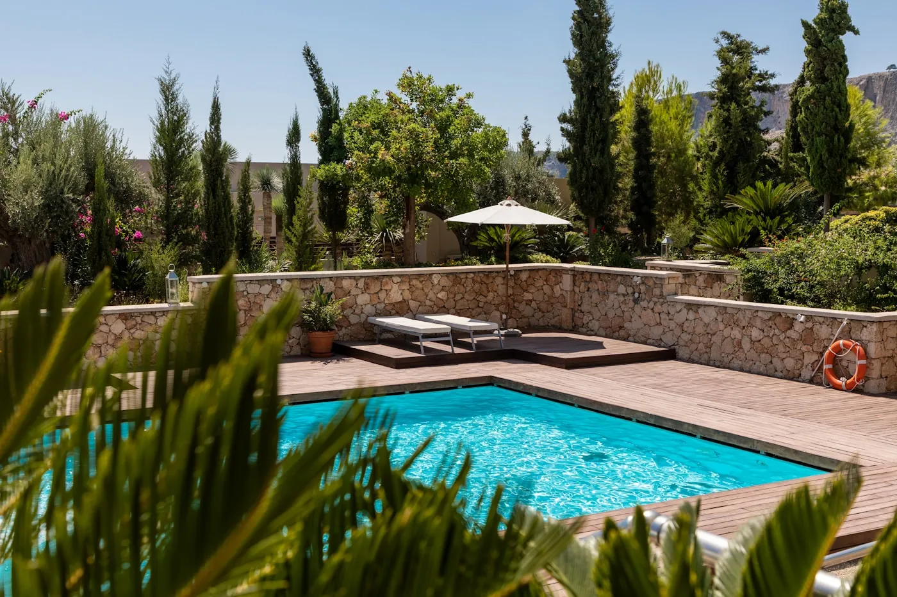
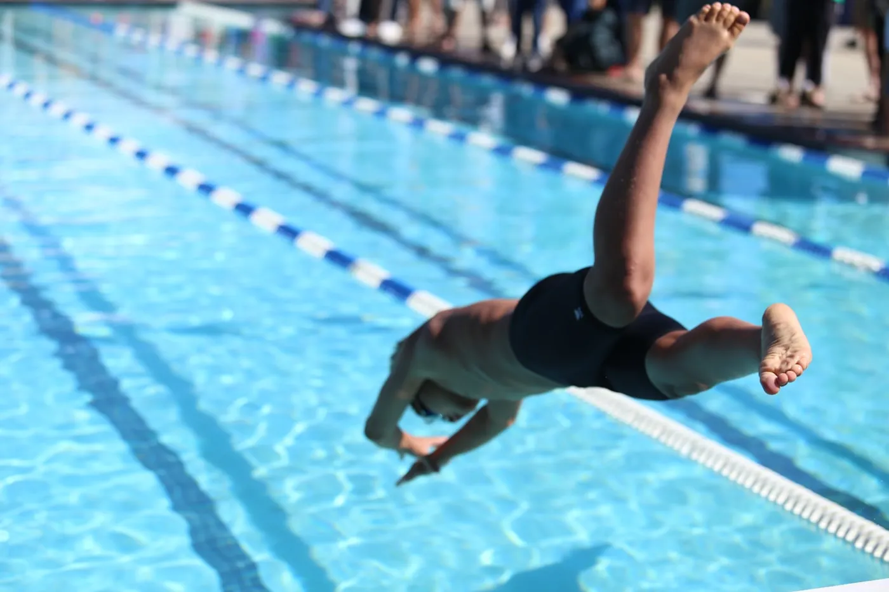
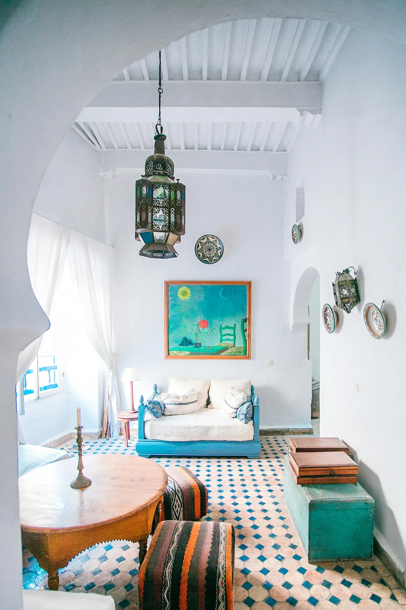

Three Decades on the Spine
The Frisco Pool Service Journey
One family, one promise — from our first route in the 1990s to the full-service team caring for your pool today. Follow the line.
A Family Trade Begins
Travis & Valerie launch Frisco Pool Service with a single route and a simple rule: do it right the first time, every time.

Year-Round Maintenance
Reliable weekly visits — balancing chemistry, skimming, brushing, and filter care so your water stays swim-ready in every season.
Equipment & Warranty Work
Pumps, heaters, salt systems — factory-warranty service for Jandy, Polaris & Pentair, fixed by trained, insured technicians.

Upgrades & New Installs
Salt-system conversions, heater installs, and modern equipment upgrades that make an aging pool feel brand new.

Serving Frisco & McKinney
30+ years on, we care for pools across Frisco, McKinney, and Collin County — same family, same promise, same clear water.